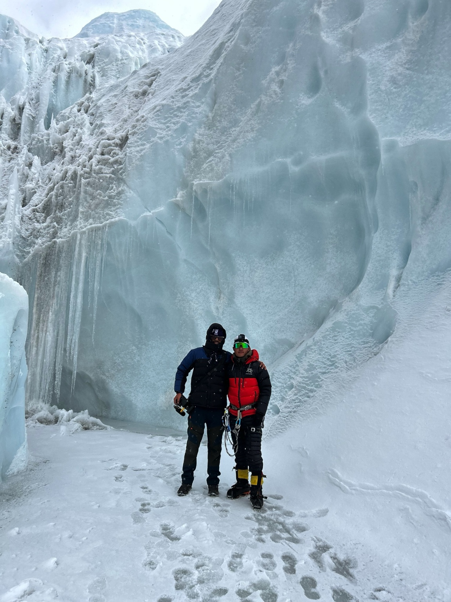
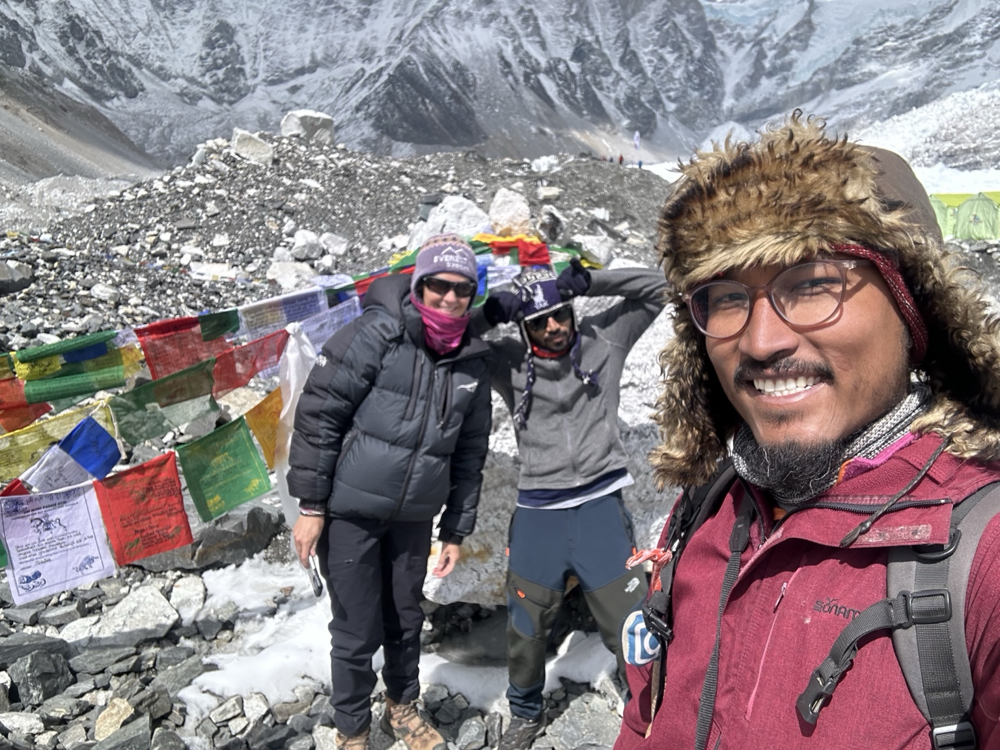
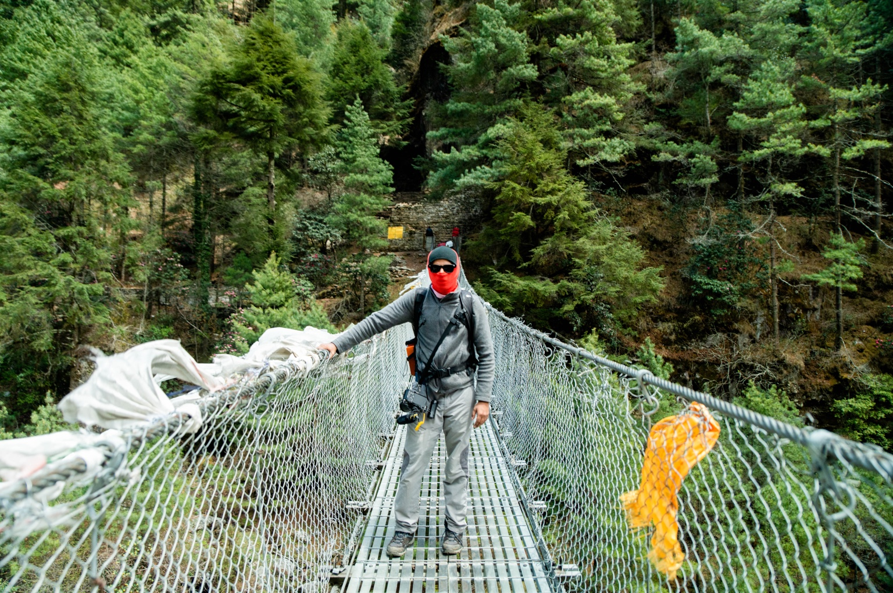

Everest is more than a mountain. It is an economy, an ecosystem and a world of people working around the climb.
Inside Everest was a four-part documentary series for Business Insider, built around the people, businesses and systems that make the world's highest mountain possible.
The story began with a pitch: instead of looking only at the summit, look at the economy surrounding it.
The film
Watch on YouTube ↗ ▶
▶




Four films.
One mountain.
Inside Everest looked at the people, systems and businesses that keep the world's highest mountain moving.

What Happens To Mount Everest's Over 110,000 Pounds Of Waste?
Watch film ↗
Everything A Sherpa Guide Carries To The Summit Of Everest
Watch film ↗
Inside The Hidden Hotels That Keep Mount Everest Running
Watch film ↗
Why Some Sherpas Say There Won’t Be Any Guides On Everest In 10 Years
Watch film ↗Finding a way
in.
Access was the first challenge. I reached out to roughly 30–40 expedition groups before finding the people willing to open up their world and build trust with a small documentary crew.
The production became a month-long expedition, working with a deliberately small camera package and adapting to the realities of filming at altitude.
The result was four films that looked beyond the iconic mountain to the people and businesses whose lives are connected to it.